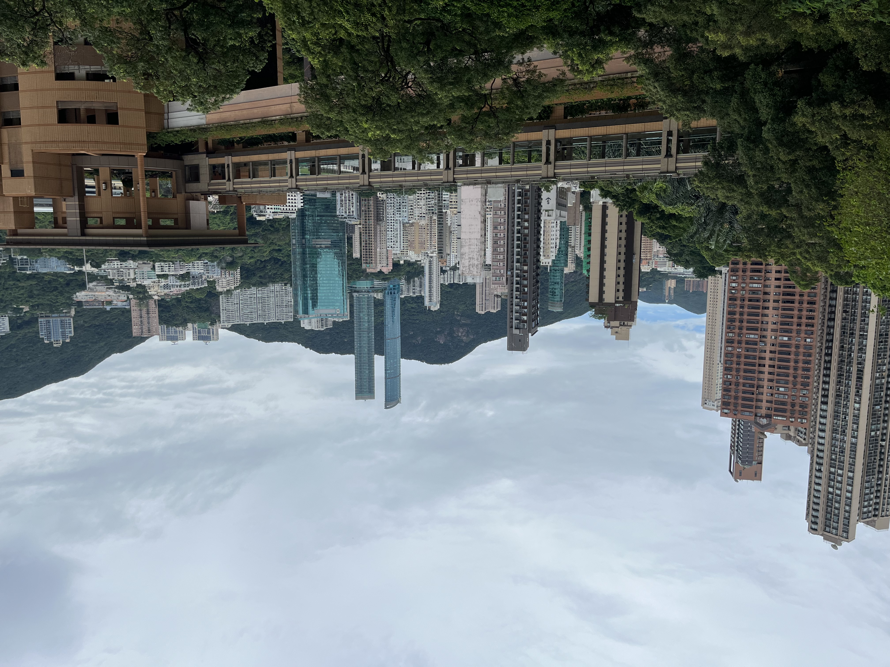
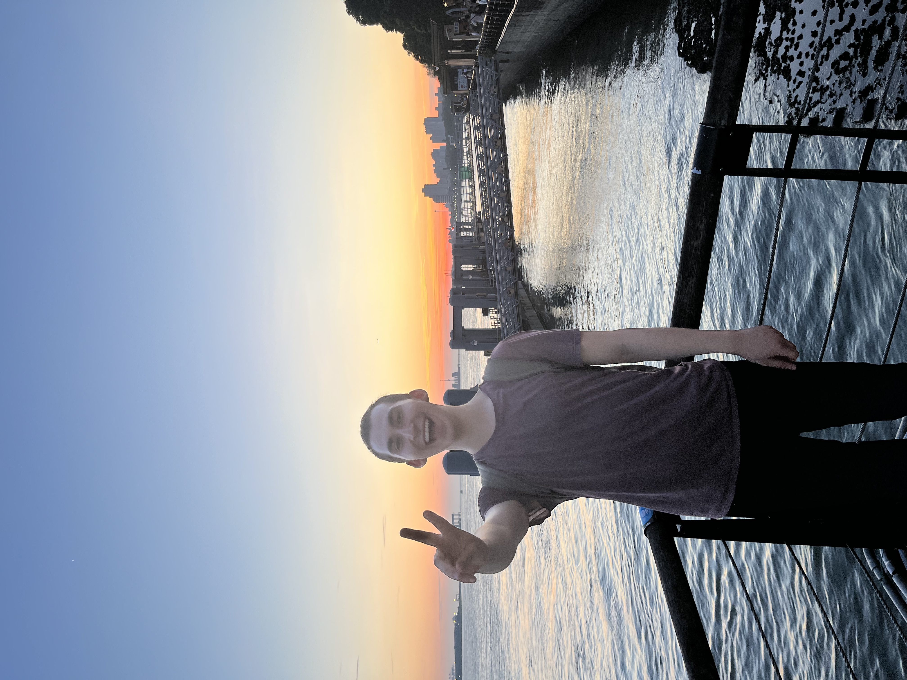
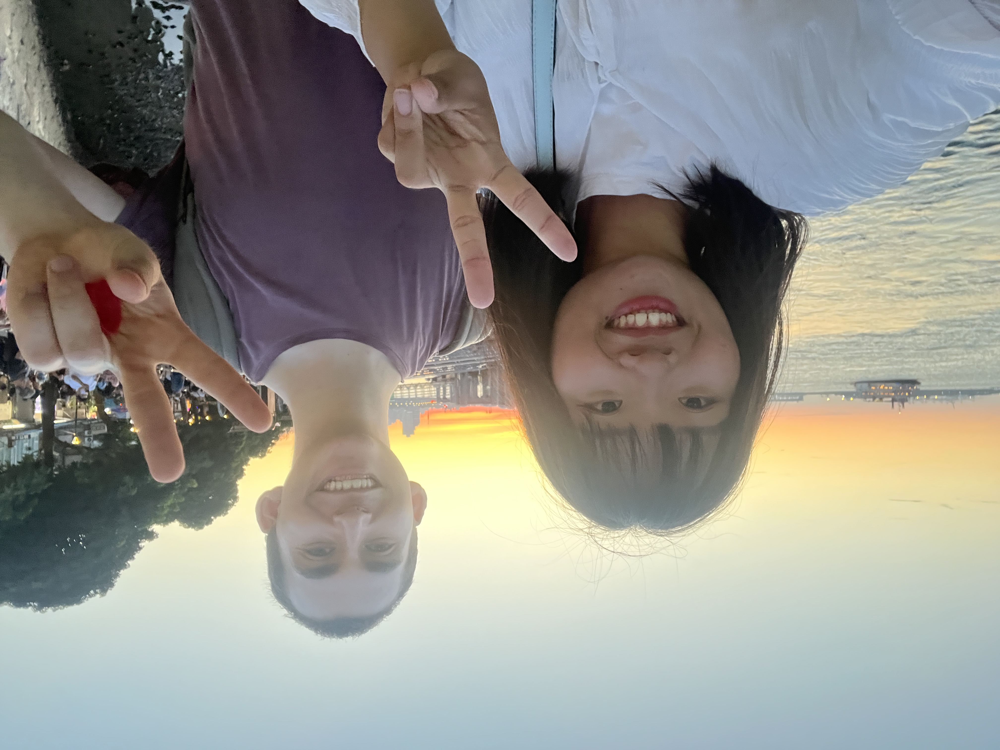
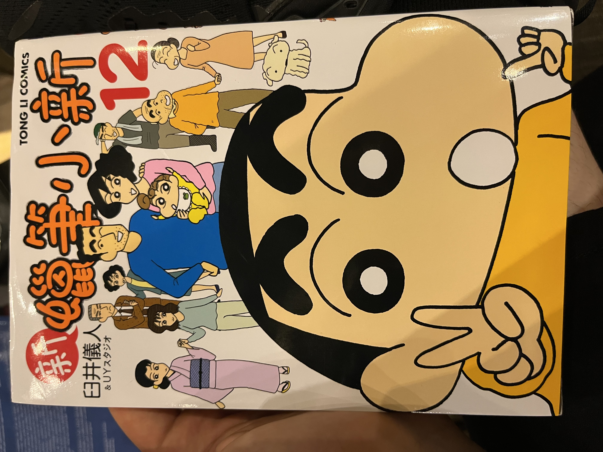
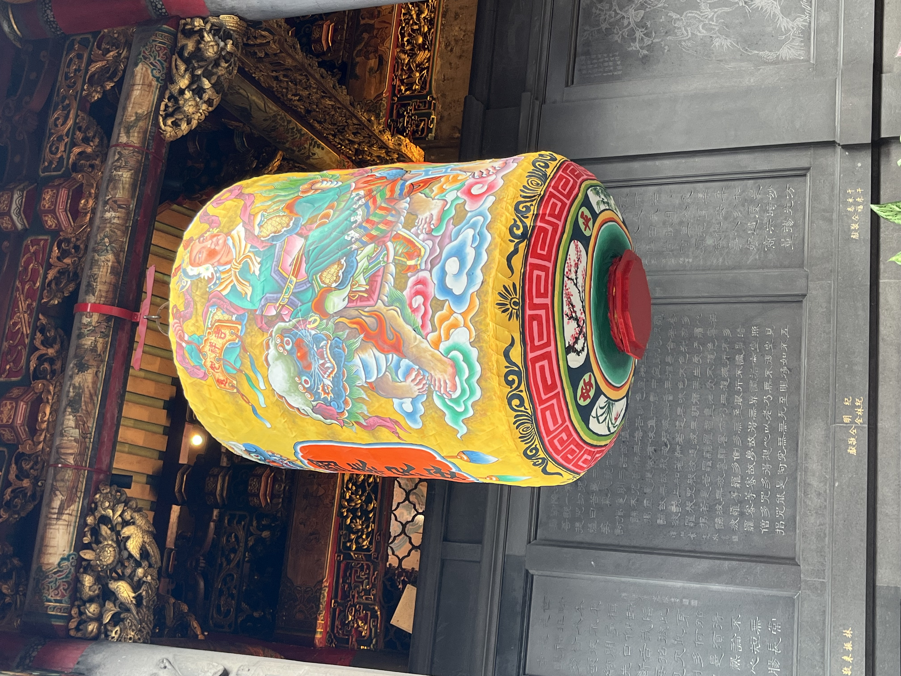
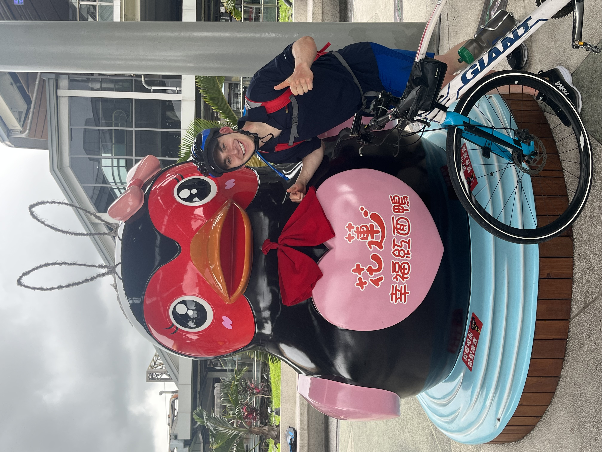
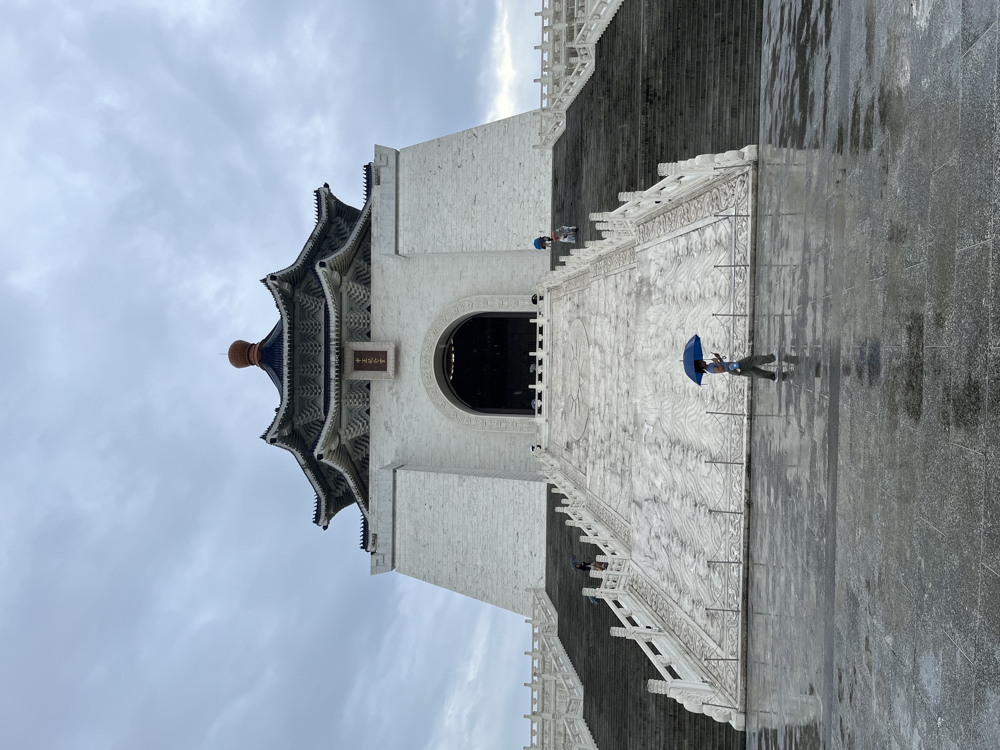
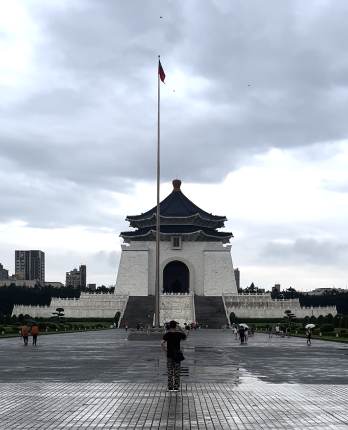

Apologies for being inactive for so long. I'll be back on it. Also need to play around with how images load so they are faster. This post will just be a few highlights of the past week to get us up to date. First and foremost, happy belated anniversary mom and dad! You are both awesome.  Hong Kong was not my favorite city (didn't feel welcoming), but I loved seeing my friends. Being with them rejuvenated me and made me appreciate how fortunate I am to have them, and the other important friendships in my life. Considering I met them less than two years ago it makes me hopeful for the ways the relationships will continue to develop and strengthen as well as for the future close friendships I will form. Unfortunately, because of NTU's orientation schedule I won't be able to attend our reunion later this summer which is a real downer because it's the last time we would all be together for most likely a year because of Louis, Gabe, and my respective study abroads. But, because of Taiwan's visa requirements, I need to go back to Hong Kong and apply for my visa there, so I'll have another opportunity to see my friends (at least Ady, Gabe, and Nico) before long. Maybe Hong Kong will grow on me too...
Since I got back from Hong Kong, I've been mostly focused on class. Monday and Tuesday were unremarkable. I did get to know my host brother a bit which I enjoyed. Cool chatting with him and he showed me an interesting engineering project he built (pool playing robot arm). Pretty chill week though. Once of my teachers got covid so I had two days off. On Wednesday I slept all day. A true college break summer day :). Then Friday I used the free time to meet my teacher who taught me remotely from last October until I arrived in Taiwan. We had lunch together and it was awesome! I felt I was getting to meet an old friend for the first time in person. Her energy is really good and you can tell she's a very confident person who is comfortable in their skin. In a way I really admire that. Yeah she is so cool. Felt great to speak with her. I look forward to meeting again! She also gave me the contact info of a coffee shop which on Saturdays hosts people interested in speaking foreign languages to come together and chat. I will go the next Saturday I don't have class as it seems a great way to practice my Chinese and meet some friends.
Saturday I had a makeup class which was fine. My focus wasn't great so I wasted some time, but that's totally ok. Just readjust for the next class. And we did some writing in Chinese which I really enjoyed because I can slowly work to build thoughts that way. I'll look to do that more regularly. After class I went straight to the train station to meet my student guide from NTU. She took me to 淡水 (danshui), a part of 新北 (New Taipei City) about an hour away by train. Super convenient and the landscape there was totally different than where I normally am. Lots of shrubs and greenery. Here's me flashing a peace sign along the river bank.  It's located along the riverside and I was fortunate to walk around, peruse the shops, and see the sunset. There were two Turkish ice cream stands and watching one perform for a particularly adorable young customer made me smile so much my cheeks were sore after. Was awesome! She was a nice guide, and I'll see her again next month once the other exchange students arrive. Two of her assigned students are Swedish. I wonder how they will handle the heat! I think I'll take my dad and brothers to 淡水, it's close by a place we are staying over the weekend so it'll be convenient. The experience reminded me how I can do just one or two things differently (take the train for an hour to a place I haven't gone) and bam I suddenly have tons of new experiences at my fingertips. Pretty enticing, and reminds me to not become so habituated to everyday doing the same thing. This has really been a detail oriented blog. Haven't touched much on my feelings, but I'm just trying to – as my dad says – document the 'highlights' so I can at least remember and have you guys know that 'Hey! I'm alive and doing some stuff'  My Chinese has improved a lot, but it's also exhausting. Since I was speaking mostly Chinese with my guide, it was 12 hours that day (6 with her, and 6 with my teacher) of conversational Chinese. really challenging although I don't realize it until after. Outside of the weekend in Hong Kong, I haven't really used english in a sustained period outside of calling my family, journaling, and writing my blogs. so odd to think about and its almost unnerving that I'm interacting with the world now mostly through a medium that I only began using a month ago. Also, I started reading this Japanese manga translated to Chinese which is fun. I can't understand too much, but its cute and I'm learning about a famous character in Taiwan. My host brother read a lot of his stories when he was a little kid.  Today I went with my host mom to her church again. I understood way more (albeit still just a little) of what they said. was so cool. like unreal cool. however, it wasn't all smooth sailing. This time they finally made the leap and tried to convert me. It was pretty shocking because I was having this elderly women explain to me in Chinese why I should become Christian and I was understanding a decent chuck of what she was saying. very surreal. and uncomfortable. it puts me in this place of wanting to continue going – great language practice, super interesting sociologically, and the people are kind to me – but also I hate when people try to convert me (happened a few times before but this is by far the most memorable and organized). Furthermore, I don't want to put myself in a hostile situation when they realize that there is no way I'm becoming Christian. This is complicated by my living with the host mother, but tomorrow I'll speak with my teacher about how to approach this using Chinese. It will ultimately be fine but right now I feel uneasy around the host mom because it appears she was complicit in this. but then again I could be wrong about her involvement. We will see what its like when I see her tomorrow. most importantly it reinforced for me how important it is to let others have their beliefs (so long as they are tolerant) and not try to alter them because they conflict with my own. People are different from me and have different value systems. mine isn't central and I shouldn't try to make others live like me. great lesson to keep in mind.
The last thing to touch on is how excited I am for my dad and brothers to come. Can't wait to show them Taipei. More so I just want to spend time with them! Also, each day my Chinese gets better and my confidence grows. Sleepy now but just good to get a post out. I'll upload this tomorrow morning my time. Look forward to posting again soon. -BJ
Recent Wanderings
June 28th 9:23 am
Heading Hong Kong tomorrow and I am so excited! I miss my friends and it will be great fun to hang with Nico, Ady, and Gabe for the weekend. Haven't been with Ady or Nico outside of the school year before so it'll be cool to be with them when I don't have any school work to take up time. Also will be great to have Ady show me a bit around HK. Just excited! My mom also really liked HK when she went so it will be cool to talk about it with her.
Sunday I slept most of the day which was nice to feel quite rested. Also had a nice swim at night. I went to the church again and it was interesting. This meeting was a special monthly meeting in a large building with 50+ people. A few kids who I spoke with. Again there was the separation between men and women. I was seated with the women again. I realize I think I'll always be seated with the women because I'm unbaptized and thus not able to enter the male section. But just a guess. Food was good and I got to practice some Mandarin. Become self conscious about my tones so I'm making lots of mistakes through second guessing myself as I speak but that's ok. Just move through the awkward period to more comfortability.
Monday's teacher had to take a family member to the hospital so I used the day to explore two areas – 西門 and 大同. These are the oldest parts of Taipei and supposed to most closely resemble the narrow streets and layout of Taipei before it was 'modernized' through boulevards and other urban planning projects. I stopped at 龍山寺 (the temple I've wanted to see) on the way, and was at initially put off by its design. The mix of bright, almost fluorescent, blues, greens, yellows, and reds displeased my eye and the tiles adorning the temple's exterior struck me as cheap. As if it was imitating the imitation temples I've seen back in the states or in film. Reminded me of two readings from class this year: Umberto Eco's Travel's in Hyperreality as well as Theodore Adorno and Max Horkheimer's The Culture Industry. Both generally concern how imitations can come to alter, supercede, and ultimately dictate how one perceives reality. I think in a way I was seeing the temple in comparison to temple replicas. Those became my stand in for the temple in reality and I judged this real temple off the temple image manufactured by Hollywood, various American China towns, and the occasional extravagant restaurant facade.  As I walked through 龍山寺 my palette became acclimated to it's colors and I started to appreciate it more. I then realized my initial displeasure came from a lack of exposure to colors being presented in that arrangement. This was such a cool observation. That the colors I am drawn to and the colors I'm (at least initially) repulsed by are the product of the environment I've grown up and that which I've been exposed to. At least that's my theory. I'm going to ask some foreigners what they think of 龍山寺 and some local Taiwanese to get more information and begin refining my hypothesis. Then I cycled around 西門 and 大同. Was fun to see the narrower alleys and the people walking around having fun, but many shops occupied by larger companies, so it didn't live up to the expectation of a 'local' place. But then again, what even makes a place local? Want to go back with my dad and brothers to see what they think. Also ate some excellent vegetarian dumplings! Those and the 自助餐 have been my favorite foods here. Look forward to eating both today! Maybe I'll take a dumpling making class so I can learn. That would be just awesome. I'll look after language class today. Yesterday I had class and chatted with a guy at the gym for a bit. Felt pretty good although an unexceptional day. This morning I spoke with the host mom for about 45 min. I often spoke incorrectly, but I think that comes down to nerves more than anything. Going to start typing a bit in Chinese so I can work on fluidity and just practice longer form expression. Will write another update from the plane tomorrow. Also, in HK I wont have phone service so I don't think I'll be able to call people from the 28th Chicago time until July 1st. Can send messages over wifi though. -BJ
Saw a Movie Today
June 24th, 10:10 pm
Yesterday and today were both pretty good. After class yesterday I went with my teacher to a Burmese restaurant and she showed me around the night market near her university (師大夜市). It is nice talking with her because I feel comfortable enough to make mistakes, she happily corrects my sentences, and most of all, it's cool to begin making a friend. But our conversations are confined to details about our lives and food, because that's mostly the extent of my current Chinese capabilities. I was thinking about this last night and how if I can't have fluid conversations about feelings, observations, and thoughts –– (most especially how people feel about the relationship) –– then a friendship can only go so far. I guess there is the component of shared experiences without language which is something I am not particularly used to, but think I guess I will learn to appreciate and experience. That quality of being with someone but not necessarily needing to be constantly engaging one another.
My linguistic limitations (which I recognize without judgement) have been starting to sit with me. I recognize I can speak enough for a simple conversation, but am definitely anxious about trying to move past that stage. Since I hear my pronunciation now and understand more of the mistakes I make, it's this weird place of almost being more reluctant to talk than when I was much worse. I guess the blissful ignorance has faded.
I am starting conversations by downplaying my abilities which instantly derails my confidence and sets me up for failure because I am just waiting for the person to not understand me, maybe give me a sideways look for not understanding as happened twice today. But maybe that's a complement that they expect me to understand. Nevertheless it lowers one's confidence, but its ok. I guess I just have to continue being confident in myself that I can engage and believe that when people talk to me, I can and will understand. Really a matter of comfort with the other person plays a huge role in how willing and then competent I am.
Beyond those components, I swam with my host mom this morning. I was thrilled to go to the pool. I haven't since coming to Taiwan and I felt so happy to be back in the water. My cardio has decreased a lot though which I don't love – feels my lungs have some blockage in them hindering my breathing. No problem though, look forward to going tomorrow. After swimming, I studied a bit of Chinese and then headed to a yoga class. But instead, I decided to call my brother Phoenix and do some stretching on my own after. It was our first time talking at length since I left and I was so happy to connect with him and hear how he's been and what he's feeling.
An added bonus was I tried a vegetarian 自助餐 for lunch. I really enjoy the 自助餐 style meals. Being able to sample a litany of vegetables and textures with tofu and rice reminds me most of how I eat at home and cooking for myself which I love. I miss the comfort of preparing food myself and eating in a space surrounded by people I am extremely comfortable with (family). I feel good in Taiwan but also miss my family. That sense of getting to share the individual experiences with others and hear there's has been what I miss most about home. I can connect with the host family, but don't have the words to convey my nuanced thoughts or even share my experiences in a way that feels I do them justice –– but maybe that's just a mental block I set for myself. Tomorrow when I go back to the church and chat with the congregants, I'll have confidence and believe I can do it.
After my self guided yoga session I had some cupping and massage done. It was nice but also scary to see how stiff I am. I try to take decent care, but it's becoming apparent I spend way too much time sitting for my back and spine. Can work to improve that though. Then, since it was raining I decided to see Spiderman.
I was surprised that the movie had no commercials! At the end there were also bins full of empty popcorn and drink containers for people to recycle. That was nice. The movie itself was English with Chinese subtitles. I enjoyed picking up bits and pieces of during the film. But it also made it clearly apparent how little I know. There is a sense as well how much it makes me appreciate communication and how I take for granted being able to connect and communicate with people through English. I'll go back to the theater once Indiana Jones 5 comes out. Should be fun! Then I sampled some durian. 5/10 on taste but excellent texture. The ones in Cambodia were significantly better. No matter, still fun to try new things in new places. So far 蓮霧 (wax apples) are by far my favorite fruit here. Will be interesting to see what my family thinks of them, especially their center. So, as it's getting late, and I'd like to swim tomorrow morning I think I'll sign off.
I leave with this: I am thrilled to be here and each day brings new experiences which change my perspective on the world and my relationship with myself, but it's definitely challenging to not have someone you feel extremely close with to share those experiences. But I guess all close relationships start somewhere. I am ready to keep developing friendships and look forward to having close friends here in time. Hope everyone is well! -BJ
Finishing my 2nd Week of Class
June 23rd 9:55 am
Today is my last day of class for the week. Although I enjoy class and learning, I am tired! So looking forward to the weekend. Will go swimming with my host mother tomorrow morning which I feel excited about. I've greatly missed swimming so getting back in the pool will be lovely. I tried out a nearby community center's pool yesterday, but it was too crowded. 4 or 5 people to a lane and all swimming breaststroke so I couldn't go more than a length before waiting a minute for the traffic jam to clear up. No stress, just not what I am used to. I found a wet market near my homestay which was great fun to run through and peek at all the different foods for sale. Looking forward to going to those markets once I have my own apartment to meet locals and buy fresh groceries.
I booked my flight to HK for next weekend and can't wait to see my friends. At the gym, one of the songs my friends normally play at pregames came on. It gave me great energy and magnified how excited I am to be with them. Speaking of meeting people, my dad and brothers booked their flights to visit me next month. I'm smiling right now thinking about showing them around Taipei and sharing the place which I'm calling home for this half a year.
A professor at UChicago previously connected me with his friend who works at NTU. Yesterday, that NTU prof's graduate student toured me around NTU's campus and answered many questions about Taiwan. It was cool to connect with him and I look forward to meeting him again and being introduced to his other friends. In the middle of NTU's campus sits drunken moon lake with many cool fowl. I saw a few geese chase another and it reminded me of dad's goose friend who always greeted him on his commute home. I feel a bit nervous about NTU. There's the nervous, excited mix of anticipatory energy which I felt before UChicago but there is an added unknown component of how it will feel making friends using a different language than English. Of course I'll have English speaking friends, but how will I develop relationships and what meaning will I take from them speaking a different language. Wow, that will be really cool. How I will feel different socially.
Now, I'll finally touch on the routine I mentioned, but never addressed in the last post. I'm going to sleep earlier, hitting the gym each day, have a go-to lunch place close to my language school, and have largely adjusted to 6 hr of 1on1 class. But it feels weird. It's hard to conceptualize that I've already been here nearly 3 weeks. Each day is long, includes new experiences (the market I mentioned for example), but it's scary how quickly time has gone. I was afraid of this when I arrived so every night I wanted to go and 'do something'. But I often got lost so I really haven't done or seen anything. I spent untold hours biking towards places but never arriving. But maybe that's ok. I have connected with different types of people and am beginning to develop friendships. For example, I'll go with my teacher to eat 麻辣乾 tonight. It is hotpot without soup but lots of spice! So I can point to those things, but there aren't tangible experiences which I have documented through photos that I either look back on or share here. It feels Taiwan is passing me by. And that's the last thing I want.
To outline how my days generally go: My mornings are taken up by journaling, chatting with my host mom, studying Chinese, procrastinating a little, the commute to class, exercise, and lunch. 1:30 arrives before I know it. Then, I am in class until 7:30, return home tired, have dinner, and chat with the host family for a bit before sleeping. Just like that M-F are taken up. Yesterday I didn't go to the gym until after class and I felt I had so much time during the day. So maybe that's what I should do. I don't want my time here to passing before I realize because I've adopted a foolish routine. I want to experience Taipei and develop how I think and feel about the world and myself, not just learn Mandarin. I think I'll use this weekend to readjust. I'm willing to, and ready to, reorient myself in relation to Taiwan. My only planned activities this weekend are to do a yoga class and visit the National Museum so I will look forward to reflecting a good deal. Sitting at the National Museum journaling, and maybe reading or something else that quiets me down, is how I hope the bulk of my Saturday afternoon will be.
There remains the feeling that I a 'missing' a real experience in Taipei. But that 'real experience' I am currently demarcating by how many tourist attractions I've visited, which I'm not sure is what I want to get out of being here. That's how I experienced Cambodia, but then again in Cambodia I existed solely on my own. There was no intention to connect with people beyond pleasantries. It feels wrong to not yet have seen famous site X, Y, and Z and even more wrong that I am not inkling to jut there given my first chance. Even if I see the National Museum, Maokong, Elephant Mountain and travel blogs' other must dos, does it mean that I know Taipei? I can share lots of stuff I've done with pictures to boot, but what does that even entail and how do I feel about that? That's the place my head is at now. Look forward to sharing where my mind and feelings move towards over the weekend. -BJ
Developing a Routine
June 21st 9:20 am
Hi all! Firstly, a few pieces of housekeeping. Most importantly, happy anniversary to Renee and Ken! Hope you had a lovely day. Secondly, I apologize for the delay between posts and formatting issue with the previous update. As this post will explain, I feel more centered now so I expect to carve out a routine for writing these consistently and getting them uploaded in readable format.
Saturday I had class for a few hours and then headed to Maokong for some tea. However, I got lost and decided to double back and head to a hotpot restaurant near my homestay. Was nice to talk with my brother and grandma a bit as well. Sunday, I accompanied my host mother to her church – a dozen or so people (one kid, a women my age, her older brother, and the rest being 60s+) who worship in a friend's kitchen. It was my first time in a church service so everything was new and I wasn't too familiar with the customs. For example, everyone was passing around juice and bread to eat and I thought I should eat a little to be polite. After I nibbled a small piece of bread I was prevented from sipping the juice, which I was told is considered Jesus's blood and only permitted for Christians to consume. Eek. I felt anxious that I had offended everyone. But ultimately wasn't a big issue.
Everyone was eager to engage with me as I think I posted a curious sight: a Jewish American who could speak a bit of Mandarin. It was fascinating to see the bible translated into Chinese, hear worship in another language, and get to experience their meal and camaraderie after. They spoke with me a little, but I more enjoyed hearing Mandarin spoken in a natural setting, at natural speeds, and picking up little bits of their conversations. I look forward to going back and continuing to learn about Taiwan from these people. It's a very unique cohort to be invited into because of the language, religious, and age barriers between me and them. Also, gives me the opportunity to have conversations and develop connections beyond speaking with people about how I know a little Mandarin. Also, although the services are too long for me (2 hr+) I think the lunch and conversation after gives me a nice sense of community which I've missed since coming to Taiwan. I am starting to see how people find community within their religious groups.
My host mom has taken to greatly since I joined her at church. She was always friendly, but I can tell there is a new level of affection from her to me now. She, unprompted, took me to the phone store and used her ID cards to set up a phone plan for me. Now I can call my family which has been so nice. She also told me about an area of Taipei she wants to visit with me next Sunday after church. Looking forward to that.
Monday I aimed to go to a temple after class, but even with google maps got lost so I didn't arrive. Instead I made a detour to revisit the Chiang Kai-Shek memorial. Nice to be there. Also set up plans to go to Hong Kong June 29th-July 2nd to visit Gabe, Nico, and Ady. Miss them so will be very nice to connect.
Yesterday, a new person arrived to the host family. She is nice and extremely well read. But it was a bit disturbing talking to her. She's Fray's age (high school sophomore) and goes to a prep school in Boston. She was telling me how since at least 7th grade there's intense pressure on kids in her environment to get into a 'top college' so they can join Wall Street. She was fluidly using slang that references the top consulting companies and investment banks which caught me very off guard. I was pretty shocked to hear a 14 year old chat about IB as if she was already recruiting. For sure, could just appear substantive with her most likely knowing little beyond catchphrases like the Big 3, but still. I find it scary to learn that so many extremely young kids are exposed to, and pressured by, that type of knowledge. When do they get to be kids and explore what they love, or be able to just go play outside without thinking about how they will affect their college chances?
The other interaction of note is that last night I was speaking to my host sister in Mandarin. We spoke on salaries in the US versus Taiwan, and I explained, albeit not without stumbling over my words, how tipping in the US substitutes for salaried work. She mentioned how I like to study Chinese and I suddenly felt extremely strange. I felt that I was existing without directing my course, as if I was watching an movie of myself act without being in control. It was this sense of 'wow, i think differently in Mandarin than English. Very unnerving. I've never thought before not guided by English (even in that conversation I was translating back and forth quickly) so my brain just felt overwhelmed at the new sensations. I immediately ate an apple to feel like I was back home.
Today, I don't feel that way, but still a bit wary about how I will develop as I continue to learn Mandarin. I mean, including class, self study, and time with the host family, I'm primarily using Mandarin over 10 hours a day. I wonder how my thoughts, perceptions, and other components will be affected as I keep developing this. But, enough armchair philosophy for today!
I am going to go to gym so I can turn my brain off for a while. But even there, I still walk on the treadmill to review vocab and try to read signs and bulletins. The immersion never stops. It's a good thing because I'm improving rather quickly, but its still so nice to chat English without thinking when I call my family and friends. The constant thinking is really intense! I realize I never touched on settling into a routine. I'll mention that in the next post. Bye until then! -BJ
Things are Improving!
June 17th 12:12 am
Today was easily my best day! To put today in context, I'll first frame the past week. I woke up not feeling great. It's been a lonely first week. I have spent time with a few different people –– yesterday friends from UChicago for lunch and with my teacher for dinner, but for sure still feeling that I don't have people to kick back and hang out with. So it gets lonely and that, combined with how challenging the first week of classes were, did a number on my self confidence. Was feeling particularly lost and more than anything else incapable of changing my situation which is always a very scary, unnerving feeling. Being in a place –– that you hope to set up some sense of connection to –– but feeling you are quite alone and disconnected from people living these. Never experienced this feeling before. But today, was really great. I took the time to journal this morning which made a huge difference. It helped me process how I was feeling which enabled me to move through the day.
I went to the gym and walked on the treadmill while learning new vocab which I particularly liked. Then when my brain got tired I finished my workout and got an excellent stretch in which I've missed dearly. Good lunch from a 自助餐 and started class energized. We focused almost entirely on tones and pronunciation. Today was the first day since I've started learning Chinese that I felt I heard, and was thus able to replicate, tone differences. Felt amazing! My teacher also helped me study word ordering so my sentences can make logical sense which I greatly appreciated. Just feels super once you begin to understand something that previously felt unachievable and clouded in mystery.
My teacher then took me to a night market (夜市) and introduced me to many of Taiwan's famous fried snacks. Pretty cool experience and I feel very fortunate that my teachers care enough about me to take me places and hang out a bit with me! It helps me both with mandarin but also just feels great to hang out with other people my age and experience something together. Made me very happy. The cherry on top was a conversation with a cab driver on the way back home. I've found cabs, although more expensive than the MRT, are fantastic opportunities to develop my conversation skills and learn about Taiwan –– so I've been taking them pretty frequently. Prompted by my questions, he told me (all in Chinese!) that Taiwan, in his opinion, has become a less challenging place to live. He spoke of rising costs, the disparity between salaries for foreigners and Taiwanese (2x for the same job in his estimate) has made it hard to survive. He spoke of driving 10 hours a day 7 days a week to live. I really appreciated his openness and it opens new questions to ask (both of Taiwanese and the foreigners I encounter) but also frames how I, as a foreigner, can position myself in Taiwan in relation to Taiwanese people.
I am tired now, so will sign off, but tomorrow should be great. Plan to see the National Museum and hopefully visit Maokong (貓空）at night to sip some of their famous tea and chat with locals. Look forward to giving you a report.
Also, very sorry to the family and friends I have not yet called. I still don't have phone service so its been tricky. Hope to have that resolved soon. Miss and love you all! -BJ
A Nice Conversation!
June 14th 10:13 pm
Hello! Today was a pretty good day. Yesterday i didn't have class because the teacher had a family emergency so I walked around the park I mentioned in the last post. Then I spent most of the day near National Taiwan Normal University – a teacher college – and trying different interesting foods. I particular liked a build your own stir fry restaurant because I got to order lots of mushrooms and tofu and learn some new vocab. I also tried 蓮霧. It's translated as wax apple, but I've never heard/seen it before. it was so good! And really cool to be trying things that look unlike what I have had before. I also got some acupuncture for my hand (residual damage from the bike trip) from a health clinic. I was pretty shocked by how cheap it was - $25 – especially since I don't have Taiwanese health insurance. My fingers are still a bit numb, but feel better than before. After acupuncture, I was feeling disappointed that my Mandarin just wasn't at the level at which I thought. Obviously I know very little, but my confidence had decreased a lot after the struggles with the first class. I was having trouble marrying my comfortability with random conversations with my seeming inability to respond to my teacher's basic questions. I returned home and feel asleep discouraged.
However, today I felt more settled in a routine. I left early and was able to run some much needed errands before class. I even got fitted for much needed musician's earplugs to prevent my tinnitus from worsening, which I am thrilled to finally have. Class was ok, we did a lot of pronunciation practice and although my tones improved a lot, I still felt kinda demoralized to see myself as being woefully deficient in the fundamental components of the language. But we always start somewhere and at least now I can skillfully enunciate the difference between 'Where?' and 'There'. After class I picked up some tofu from a supermarket and arrived home late. Was cool that I'm fairly comfortable using the MRT now.
The highlight of my day was chatting with my host mom. We spoke for an hour! And broached many subjects! So cool. And she has the willingness to let me make many mistakes and correct those that matter while letting others slide because she understands my meaning. My confidence feels a lot better than earlier. I look forward to tomorrow a lot! But right now I need to review some vocab because I will go with my teacher tomorrow to a wet market to practice and if I think 火龍果 is carrot but its actually dragon fruit (a mistake I made tonight ordering a smoothie!) I might have some trouble :) ... no matter, it will be fun regardless -BJ
Finished Bike Trip and First Two Days in Taipei
June 13th 9:50 am

It is weird to think I've been here over a week now. Still feel I am finding my bearings and don't have any kind of routine or foundation developed. The last day of the bike ride was smooth. My legs felt quite stiff but nothing unmanageable. Once I arrived at the hotel, I promptly fell asleep. Woke up, had dinner, and fell back asleep. A well deserved rest.
The next day (Sunday the 11th) I took the train to Taipei and met the host family. There was another student there, but he moved out on the 12th. He was only a 7th grader! I was very impressed that he was willing to live in another place by himself, but also thought about how much of the experience of Taipei is restricted to him because of his age. Regarding the family, they are friendly and had some questions for me. The sister's husband is finishing his PhD in the states and is considering applying to work for UChicago which is a fun coincidence. We were able to communicate mostly in Mandarin (very basic of course) which felt nice. At this point, my confidence in speaking was rather high. I walked around their neighborhood, went to a great hotpot restaurant, sampled some Taiwanese mangos from a fruit stand, and then took the MRT (Taipei's metro system) to the Chiang-Kai-Shiek memorial.
On my way towards the memorial, I saw a market called 南門市場 which attracted my attention. I stopped in and it was awesome! One of those big open markets with lots of food stalls, people, and energy. Snacked on a bagged of crunchy dried mushrooms and a fruit a vendor gifted me. Chatted with a woman and it was just lovely. Then going to the Chiang Memorial was fantastic.  It was weird to think about this spectacular space being dedicated to a military dictator who killed many Taiwanese and (at least according to my understanding) never saw the island as more than a spring board to retake China. His statue suggests him as a kindly grandfather though. Will be interesting to ask Taiwanese about this. But it is a beautiful complex. I felt at peace while I was there, There was a man who revered Chiang standing at the middle of the courtyard screaming what I presumed to be military chants and repeatedly saluting Chiang's statue. Disquieting, but most people seemed to ignore him. Regardless, I intend to return again, just a very nice space.  I got lost going back, and since I don't yet have cell service had to resort to calling a cab. Turned out nicely, we chatted a bit and he gave me 30% off without asking. Very generous!
The next day (yesterday) was my first day of class. The current class schedule is rough and I need to change it. It runs 1:30-7:30pm of individual tutoring and although my teacher is excellent and I found class to be super engaging, I burned out heavily after 4 hours and had to end early because I couldn't think anymore. Also, seeing how I still have fundamental basic gaps I want to focus on those before continuing to move through a textbook and learn new grammar/vocab at breakneck speed. Ultimately, this was good because it helped me reflect on what my learning goals are and I feel better positioned. But I was exhausted when I returned home and fell asleep by 8:30.
At present, I think those goals are to navigate Taipei using Mandarin (comfortable reading signage, ordering in restaurants, asking for directions, small talk with strangers) and most of all build the ability to have dynamic, unplanned conversations with people that can enable us to connect. I guess that just means being able to make friends and express my thoughts and feelings through Mandarin. To have a friendship I formed using Mandarin would feel great. That would be spectacular. In many ways these classes are akin to the bike trip: I'm starting out unsure of when, if ever I'll make my destination and encountering lots of difficulty which makes me doubt myself. For example, my speaking confidence today is greatly decreased from before class. However, I can just keep going. I know I will get there eventually. I am proud of how far I've come and what is left to be done. Most of all, I will go at a comfortable pace (with lots of breaks and time for reflection!) that centers the journey, rather than my end goal, as the central focus. Going to post this now, head to the gym and hopefully walk around Taipei's largest public park (大安森林公園) before class. Then tonight, I want to walk around Taipei's oldest section. But if I just sit in a cafe, have some vegetarian dumplings and journal for a few hours, that would be just as nice. Regardless, I look forward to today. Talk soon! -BJ
Accepted to NTU!
June 10th 7:50 am
I just received notice I have been accepted to National Taiwan University's exchange program for the fall semester! So excited. Since I started planning my time in Taiwan, I hope to study there, but due to their admission timeline I didn't find out until now. So this a big relief. Everything is moving smoothly! -BJ
Bike Trip Days 2 and 3
June 10th 6:00 am
Hello again! The past few days were very eventful. I biked from Yuli to Taitung on the 8th (80km) and from Taitung to a homestay near Hualien yesterday (135km). I found these to be my most challenging 48 hour period in recent memory.
Yuli to Taitung: Physically, this day was the most punishing. Although I began riding by 8:30 the heat was nearly unbearable. I drank nearly two gallons of water within the first hour and was still thirsty. My muscles ached, my pace was glacial, and the self doubt that I wouldn't be able to finish started to creep in. Taitung felt unreachable. I simply wanted to find a shady spot, sleep, and magically wakeup in my air conditioned hotel.
In a way this is my favorite part about these long bike trips. Everything physically, but most of all mentally, is screaming that you cannot keep going, that surely the goal you have set for yourself is too ambitious, and you might as well just give up. But since you have to reach your destination and the only way to get there is through cycling, you keep peddling and somehow, someway, you always make it. A big takeaway from this day was the importance of taking lots of breaks, having a defined plan, but also being willing to deviate from said plan. For example, since the first day I had a fantastic, rejuvenating lunch I wanted, and expected, this day would be similar. I had some vegetables, pineapple, and 飯館 (pickled vegetables wrapped in rice) in my bag that I picked up from a roadside 自助餐 (self-serve restaurant) and was hungry, but was waiting to eat until a parallel to day one's vegetarian feast appeared on the horizon. But that never came.
Normally, in this type of situation I keep pushing myself further and further to the point of pure exhaustion while fostering extreme feelings of self-resentment that I am forcing myself to continue in the hopes a desired state (in this case a vegetarian restaurant with tofu) appears. Realizing in this case, continuing risked heat stroke, I stopped in the parking lot of an abandoned Buddhist temple, cobbled together lunch, drank more water, and replenished my energy while a gecko greedily eyed my meal. It was hardly glorious, but it was sufficient and did the job.
Spirits restored, I began again. Fortunately, heavy rain soon began, which protected me from the heat for the next several hours. However, the rest of the ride was still extremely challenging, in many ways miserable, and I counted down each half kilometer demarcated by roadside signs until I limped into Taitung, very tired, a bit grouchy, heavily sunburned (despite reapplying every hour), so thankful to be done, and ready to unwind with a much needed shower.
My accommodations were a bed in a shared room. I did this because the thought of not having my own space made me uncomfortable so I wanted to see what that would feel like. I struggled to understand the host's directions to the shower, failed to find it, and left for dinner still caked in sweat from the ride and very frustrated with myself. I considered asking for an upgrade to a personal room so I could find the shower, but eating my 臭豆腐 (stinky tofu), I realized my inability to locate the shower, is not the problem of the hotel, it is the product of my own linguistic shortcomings. Rather than be angry at the world for inconveniencing me and not conforming to my expectations (as I used to do in these types of situations), I settled myself until the frustration passed, and asked the host again for directions to the bathroom. This time, with the assistance of photos. I understood how to get to the bathroom. I showered, cleaned the bathroom to not inconvenience the other travelers, and promptly fell asleep.
I didn't sleep well due to a mixture of jetlag, a rigid bed, and general tension I held from feeling obligated to consider the needs of the others in the room (wiping down the bathroom for example) over how I would normally unwind. I don't think I would care to be in a shared room again, but I am thankful I tried it.
Taitung to homestay near Hualien: Ultimately, poor sleep was a very fortunate thing because I woke up about 5am and decided to start riding ASAP. I left by 5:45 under the glow of an already risen sun, provisions from 7-11 in my panniers, and feeling much better than the previous day. Because I started earlier, the sun was mild so the ride was pleasant. Rather than push myself to exhaustion like previous days I took breaks when I started to feel tired. I hit my 70km goal for the day by noon and figured I might as well keep going. After lunch, I began again shielded from the sun by a kind mist which lasted the entire day. Once I hit 100km my legs began to ache, so I stopped near a fishing port, booked a hotel about 35km up the road by phone, and continued. I began to tired quickly after this and my pace slowed a lot. No problem, I felt great to just be going. Sure there were numerous times I wanted to quit, several moments I felt miserable that I was being rained on, sore, and still x km away from rest, but all the while there was an appreciation for the experience. Friendly people yelling 加油！(the equivalent to keep up the hard work) as they drove by as well as conversations with venders I bought water from buoyed my spirits. At one point I stopped to rest my legs and across the street was a group of people who appeared to be heckling me. I thought why not let's go try to speak with them. I asked if I could buy some green tea, which unfortunately they didn't have but instead they invited me to sit with them. We chatted for about half an hour about topics from my school, my home country, my bike trip, and the other typical questions that people have thus far broached with me. Looking at my temporary companions I noticed all but one were missing most of their teeth. Their teeth that remained were tarred black and a few had red, blood-like liquid coming out of their mouth. Since all except the man with all his teeth were chewing something, I figured that substance was the cause of their poor oral state.
The woman with the most red liquid offered me a shell wrapped in a leaf to eat, and once the man with teeth said don't eat it, I figured it was the hazardous consumable. My curiosity for them to give me its name so I could read about it later overpowered my traditional commitment to dental hygiene, so I bit down. It was extremely bitter, and I swallowed quickly, not wanting to taste further. My mouth became a bit numb and I thought this was equivalent to chewing tobacco. Not enjoyable, would not do again. I asked them to write down its name (in retrospect I could have done this without risking my teeth) and they did. We chatted a bit more, they wished me safe travels, and I was off. During my Chinese lesson that night, my teacher told me this was betal nut. Oops. Prolly shouldn't have eaten that. But I guess its a good story? lol.
The final part of the ride was a steep uphill, so steep I had to walk a decent portion. I felt so exhausted. Despite this only being 3km it took me nearly 45 min to reach the top of the hill. Thankfully a huge downhill awaited me. I zipped down ready to be at the hotel. To my chagrin, I overshot and the hotel was at the top of the hill! I had to trudge back, as the day turned to night, alongside a rather busy road and thought to myself, "I know I'm going to to make it but this is probably the closest I've come to death before." I felt extremely vulnerable and exposed to the whims of both the forest around me and the cars zooming past me. All the while, rain poured down while thunder crackled nearby.
I arrived at the homestay throughly shot, but also so proud of myself to have ridden so much and done so at the pace that felt comfortable. The hostess was amazing and made me a hearty dinner which restored my energy. I slept amazingly and am looking forward to finishing up today strong, but also very excited to be off a bike for a while. :) Quick note – these post have been long! I think this is because I have nothing else to do in the mornings yet and they are excellent mechanisms for me to reflect on my experiences while getting to share them with family and friends. If you read this far, thanks! If not, I am still thankful because the idea that someone might be reading motivates me to keep these up and keep considering how I am feeling in this new place. Today I have a short 35 km ride to Hualien. Opposed to past days, I don't have expectations of how the ride will be – a welcome change. -BJ
Bike Trip Day 1: Hualien to Yuli
June 7th
7:55am: Hello again! Today I begin my bike trip with a 90km ride to Yuli along Highway 9. Very excited. Will start after I pick up my bicycle from the Giant Bike Shop in Hualien. This morning I woke up early, studied breakfast food vocab and then applied it through ordering 玉米蛋餅 (corn and egg cake) and 豆漿 (soy milk) at the restaurant next to my hotel. So cool! Stumbled over the bill amount, but can improve that next time. Each interaction is so exciting, also great to try local foods. I'm about to begin my morning Mandarin lesson then I'll head to the bike shop and my ride. Hope to see some beautiful scenery.
June 8th 5:55 am: Update coming the next morning from my hostel's lobby. Yesterday was amazing! The ride started out very rough with punishing heat which quickly depleted my energy and I was barely breaking 10km/hr for a while. However, thankfully the sky opened up a quarter of the way through and poured throughout the rest of the day. I had forgotten to pack my raincoat, but I was overjoyed to gain reprieve from the heat and peddled with vigor.
As I zipped through Hualien County, I was surrounded on both sides by beautiful mountains and an incredibly verdant landscape. Bugs buzzed and birds chirped with the occasional whoosh of a car passing just a bit too close to me reminding me that other people were indeed nearby. The rain certainly helped everything feel that much more alive. I stopped for lunch at a small vegetarian restaurant, was intimidated by the handwritten menu which I recognized little from and asked the chef for his recommendations. He prepared a delicious three course spicy tofu, soup, and vegetables banquet – made extra delicious by my hunger from the ride – and asked me a few questions about myself. That was the first time someone engaged with me on a conversational level outside of hotel reservations and the like. Although he spoke quickly and I missed most of his message, I understood some of his questions and could respond which was amazing! Little by little we get better. Also, I recognize this blog has touched on food a lot thus far but I think its because ordering food, at least at this stage of my language journey is the most immediate way I can see progress and begin to connect with people.
I cycled through the torrent for another 2 hr before reaching a section of tea plantations. Just about 25km left! I passed a tea house whose ads dotted the past several kms. I considered going in, thought "If they advertise so heavily, their tea can't be that good" but then decided I might as well try something new and go past my initial judgements. I u-turned, parked my bike, and entered the teahouse. This was one of the best experiences of my life!
The three occupants at first looked confused by my presence, but once I confidently said, "你好我想喝喝看你們的茶!" (I'd like to try your tea) their faces melted into smiles, they quickly offered me a seat, and we chatted on and off – admittedly with many pauses as I puzzled through creating responses and making meaning of sentences with several words I didn't recognize – for the better part of an hour. All the while, we shared several pots of red tea, nuts, and watermelon. They were incredibly kind, hospitable and friendly! As afternoon turned to early evening, I bid my unexpected companions goodbye and headed to Yuli. I'm still feeling great about that experience. Each conversation further motivates me, shows my deficiencies, and helps me focus my studies. Most of all, they feel great! I will shortly head to Taidong and look forward to the many meaningful experiences that will occur. Just hopefully it won't be too hot! –BJ
Heading to Hualien
June 6th, 9:40 am
Arrived in Taipei about 5 hours ago! Flight was smooth. Sat next to a Vietnamese-American who told me he is taking his kids to Vietnam for the first time. Took Taipei's rail system (the MRT) from the airport to the main train station to catch the 高鐵 (high speed rail) to Hualien, the city on Taiwan's east coast where I'll begin my bike trip tomorrow. Arrived a few hours before my 8:40 train was scheduled so I thought, why not book an earlier ticket on the 7:30 高鐵 departing from platform 4B.
I pick up a new ticket and some food before arriving at 4B with time to burn. However, confused by the signage, I mistakenly exit the platform on a one-way staircase. Seeing the exit counter I realize my mistake and ask the attendant for directions (my first time using Mandarin outside of class which, although I stumbled over my words and only understood 'turn left', was really cool!). I renavigate the station to return to 4B by 7:15.
I begin eating my food and after 5 minutes a train arrives. Although this train is scheduled to leave at 7:24, not 7:30 like my ticket says, the flashing train schedule indicating the next train isn't until 7:35. I think "Lucky me, The train is early!" hop on and continuing blissfully eating my breakfast. The train pulls out of the station and I take stock of my fellow passengers. They are all dressed business casual – odd attire for a trip to the coast. Moreover, this train car bears little resemblance to photos I've seen of the 高鐵's interior. A bit confused, I GoogleMaps the final destination, which turns out to not only not go through Hualien, but take me to Taiwan's opposite coast!
Oops.
Laughing at myself, I get off at the first stop, book the next train back to Taipei main station and thankfully make it in time for my original 8:40 train, which I sit writing this on. Auspicious beginnings. Jokes aside, I'm happy this happened. It was memorable, low stakes, and I got the first experience of practicing Mandarin with strangers which buoyed my confidence. The only other thing to add is that I'm excited to eat in a restaurant later and order food for the first time in Mandarin. That will be awesome. If you made it through this bloc of text, thanks for reading! -BJ
Leaving Chicago
June 4th, 2023 11:35pm
Sitting at gate M29 waiting for my flight to board. I am very nervous, but also feel so excited and ready to experience a new place. I don't think I've registered that I'll be away for 7 months. It just feels like going on a solo vacation right now. Once I settle in it will be very different.
I don't know what to expect, but it is already cool to hear Mandarin be spoken by people at the gate. It is more than I have consistenly heard in a very long time. I can pick up a little bit but nothing meaningful. Still very cool. Yes I am really excited. Sad to leave my family and scared to go to a new place to live for longer than I've ever been out of Chicago, but I'm ready. Going to post this now before I board. -BJ


 Arrived in Taipei about 5 hours ago! Flight was smooth. Sat next to a Vietnamese-American who told me he is taking his kids to Vietnam for the first time. Took Taipei's rail system (the MRT) from the airport to the main train station to catch the 高鐵 (high speed rail) to Hualien, the city on Taiwan's east coast where I'll begin my bike trip tomorrow. Arrived a few hours before my 8:40 train was scheduled so I thought, why not book an earlier ticket on the 7:30 高鐵 departing from platform 4B.
Arrived in Taipei about 5 hours ago! Flight was smooth. Sat next to a Vietnamese-American who told me he is taking his kids to Vietnam for the first time. Took Taipei's rail system (the MRT) from the airport to the main train station to catch the 高鐵 (high speed rail) to Hualien, the city on Taiwan's east coast where I'll begin my bike trip tomorrow. Arrived a few hours before my 8:40 train was scheduled so I thought, why not book an earlier ticket on the 7:30 高鐵 departing from platform 4B.